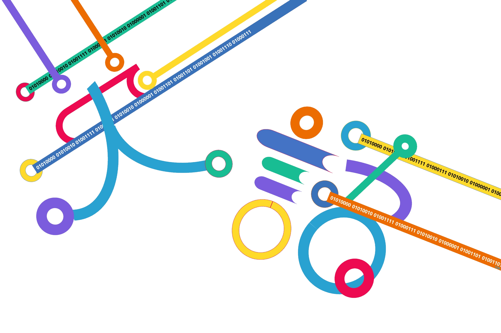

Why English x Programming?
English
The world's English-speaking population has grown to 1.75 billion, or about 25% of the total population of 7 billion. The ability to use English is an important skill required in this global age.
Programming
It is predicted that by 2035, approximately 50% of jobs will be replaceable by AI and robots. Programming is a necessary skill to coexist with technology.